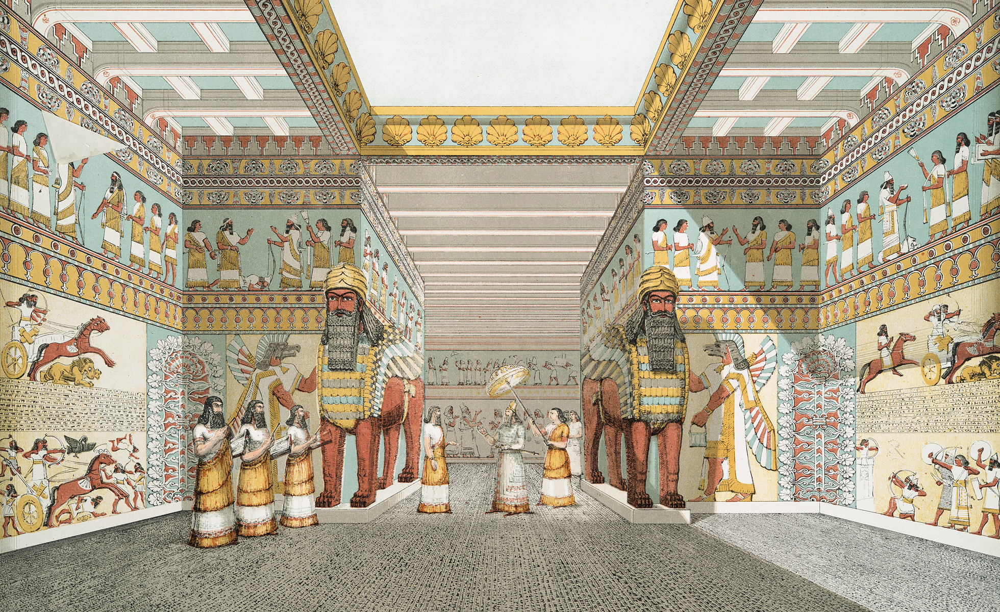

Nineveh

- Find Name
- Nineveh
- Description
- The last great capital of the Assyrian Empire, on the east bank of the Tigris opposite modern Mosul. Austen Henry Layard first dug at Nimrud thinking it was Nineveh, then in 1847 identified Kuyunjik as the true city, uncovering the Southwest Palace of Sennacherib — the 'palace without a rival', with 71 halls lined with sculptured slabs — and, under Hormuzd Rassam, the North Palace of Ashurbanipal, whose library of some 30,000 tablets is already entry #235. Sennacherib made Nineveh one of the ancient world's great cities, ringed by massive walls and fed by canals and aqueducts, and a coalition of Babylonians and Medes destroyed it in 612 BC, as Nahum had foretold.
- Historical Period
- Neo-Assyrian, 8th-7th centuries BC
- Evidence Class
- Direct
- Interpretations
- Scholars agree Kuyunjik is biblical Nineveh and that the city fell in 612 BC; the traditional Tomb of Jonah on Nebi Yunus is a later shrine, not an excavated identification, and is not claimed here. The Library of Ashurbanipal (entry #235) is a separate entry for the tablets; this entry is for the city and its palaces.
- Alternative Names
- Ninua; Nineve
- Related Places
- Related Books
- Related Events
- Related People
- Scripture Illuminated
- Biblical Significance
- Nineveh is the city Jonah was sent to and the city Nahum condemned: a great, learned, powerful capital that repented at Jonah's preaching and fell, a century and a half later, under the judgment Nahum pronounced. It is also the capital Sennacherib returned to after his army perished before Jerusalem (2 Kings 19:36). Walking its excavated palaces puts the reader inside the empire that swallowed the northern kingdom and threatened Judah.
- Artifact Date
- Capital from the reign of Sennacherib (704-681 BC) to its fall in 612 BC
- Current Location
- In situ, Mosul, Iraq (palace reliefs chiefly in the British Museum)
- Date Discovered
- 1847-1851 (Layard at Kuyunjik; Rassam continued the work)
- Discovery Location
- Kuyunjik and Nebi Yunus mounds, opposite Mosul, Iraq
- Timeline Era
- Divided Monarchy
Awaiting Review Not yet checked against scholarly sources. Treat its claims as provisional until this entry is reviewed. About verification
Last reviewed: not yet reviewed